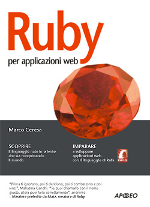

Backend engineer and tech lead with 20+ years building and leading production systems in Ruby on Rails, Elixir/Phoenix and Python. Led legacy rewrites and microservices migrations (70% lower resource use at Chorally), raised test coverage from 16% to 40% at indigo.ai, led teams of up to 6, and delivered UK government services for the Cabinet Office, Ministry of Justice and Department for Education. Currently building Torbido, a Rails 8 marketplace, as founder and sole developer.
Skills
Languages: Ruby, Elixir, Python, JavaScript, HTML, CSS, Elm
Built and launched a marketplace for Italian craft beer and artisanal spirits from scratch as sole developer: producer storefronts, checkout, commissions, reviews, AI-powered recommendations and geo (km 0) search.
In production, with 153+ PRs merged and 185+ commits.
Extracted the recommendation engine into the open-source project Cicerone (see Open source).
Stack: Ruby on Rails 8, Hotwire, PostgreSQL, Stripe Connect, Meilisearch, Claude API
Led dependency management and security vulnerability remediation across multiple production applications.
Drove the cloud migration: containerised legacy applications with Docker, added security scanning pipelines and deployed to AWS with CI/CD (CircleCI, Jenkins).
Maintained several internal Python services.
Stack: Ruby on Rails, Python, AWS, Docker, CircleCI, Jenkins
Open-source, self-hosted batch recommender engine spun out of Torbido: trains offline, writes top-K recommendations and serves them through a read-only, OpenAPI-documented HTTP API with an ops dashboard.
Hybrid strategies (collaborative filtering, item KNN, content cold-start fallback, popularity, latest) with priority or RRF fusion, plus policies, AutoML backtesting and Prometheus metrics.
Small self-funded nonprofit side project: a search engine where dog shelters list dogs for adoption, helping people find the right dog to adopt.
Stack: Ruby on Rails, HAML, JavaScript, PostgreSQL, Elasticsearch
Earlier experience
Developer · The Fool s.r.l.
– · Milan, Italy
Built EngagementConsole, a social content moderation dashboard used by Banca Mediolanum, Radio24 and Volkswagen.
EngagementConsole collected user-generated content from Twitter, Facebook, Instagram, Disqus and WordPress so moderators and managers could classify, analyse and manage it.
Also planned, built, deployed and maintained other web applications and data extraction services for digital asset management, copyright protection and reputation monitoring.
Sole developer of a new worldwide Rails/Spree e-commerce site with multiple tax regimes; maintained the legacy Rails 2.0 site.
Built a thorough admin interface for non-technical staff to manage products and the sale process, coordinating with external developers.
The legacy codebase had been built up by many contributors over more than 6 years.
Developer · Sportboom
– · Milan, Italy
Ported a marketplace for sport enthusiasts from PHP/MySQL to Rails/PostgreSQL and drove its SEO strategy; hired and managed a team of 2 (designer, junior developer).
Stack: Ruby on Rails, PostgreSQL, Bootstrap
Founder & Developer · StyleJam
– · Seattle, WA
Sole founder of a seed-funded (H-Farm) design showcase platform, covering development, sales and operations.
A reinterpretation of CSS Zen Garden where designers styled a shared page with their own data and CSS, similar to Carbonmade.
Handled development, PR, marketing, sales, accounting and system administration.
Built and owned the architecture of Zooppa from the ground up: a crowdsourcing platform connecting brands with a creative community of 350,000+ members for video and graphic design campaigns.
Built and led a team of 4 from scratch (developers, designers, sysadmins).
Managed client relationships with Google, Microsoft, Sun, AT&T, Samsung and Fiat.
Stack: Ruby on Rails, MySQL
Developer · Hotchalk
– · Campbell, CA
Rewrote a Java application in Rails with full test coverage for launch; low-defect release with 30k+ registered users on day one.
Developer · Assembla
– · Needham, MA
Contributed to the initial implementation of Breakout, a Rails precursor to GitHub for hosting code via SVN and Trac.

Author · Apogeo
– · Milan, Italy
Wrote the database chapter of Ruby per applicazioni web, the first Italian-language book about Ruby.
Independent Consultant · Various clients
– · Italy
Built a Python/Zope website for Monte dei Paschi di Siena and a Python/wxPython fax server client for Telecom Italia.
Developer · Neato Europe
– · Mantova, Italy
Built the e-commerce site (ported from ASP 3 to PHP) and a CRM, and administered the company's FreeBSD servers.
Education
Liceo Linguistico Redentore (secondary school, modern languages) · –